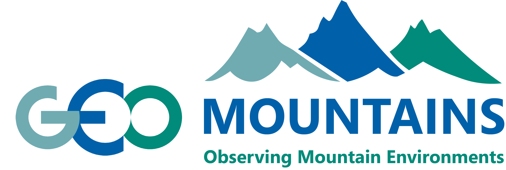

GEO Mountains In Situ Inventory v3:
Select SUB-LAYER(S) (Network / Compilation)...
SELECT ALL
HIDE ALL
Base Layers:
Mountain Ranges (GMBA v2)
Countries
Base Map:
OpenStreetMap
Satellite
Click on features to see attributes
